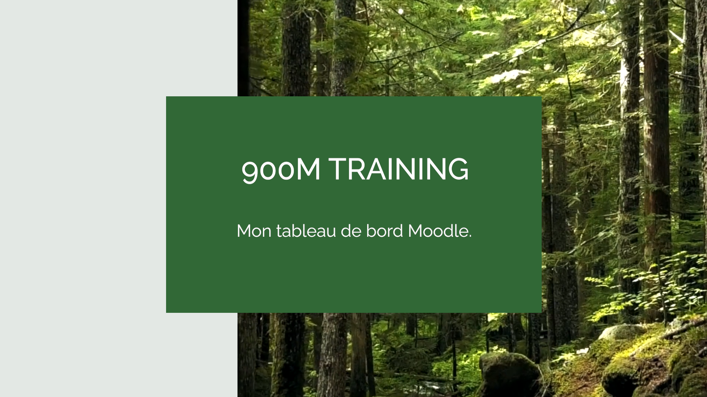

900M
Se former librement pour multiplier les acteurs de la reforestation.
"Bénévole dans l'association 900M, j'ai choisi de mettre à profit les réalisations de mon master 2."
Analyse des besoins par Laetitia Bonnemain
Capsules vidéo :
Une capsule reprenant les principes de base des Obligations Réelles Environnementales.
Outils utilisés :
- Adobe Première Pro
- Camtasia
- Canva
Cette capsule vise à permettre à l'apprenant de se projeter dans la finalisation de son projet de reforestation et de s'assurer de sa conservation. L'objectif de la capsule est double :
Expliquer les bases légales qui sous-tendent une ORE valide.
Mettre en situation l'apprenant pour qu'il puisse comprendre les avantages offerts par l'ORE pour la conservation de son projet et l'importance de dialoguer avec des partenaires publics comme privés.
La capsule est entièrement sous-titrée et une fiche reprenant le texte l'accompagne afin de permettre à l'apprenant de reprendre à son rythme les notions explicitées.

Un tutoriel pour se familiariser avec le tableau de bord de Moodle.
Outils utilisés :
- Adobe Première Pro
- Camtasia
- Canva
La formation se déroulant 100% online, il est important que l'apprenant puisse comprendre et exploiter les possibilités offerte par sa plateforme de formation. L'engagement et le sentiment d'appartenance à un groupe sont de grands atouts pour la réussite de toute formation distancielle. Cette capsule se focalise donc sur les moyens de connexion mis à disposition des élèves. La capsule est entièrement sous-titrée.
Une fiche reprenant les captures d'écran et localisant les éléments clés de navigation, accompagne la capsule pour permettre à l'apprenant de revenir sur un point précis du tutoriel sans visionner à nouveau toute la capsule.ou pour pouvoir la consulter en même temps qu'il effectue les manipulations.
Podcast et image matricielle.
Un podcast contextualisant le combat du Docteur Miyawaki pour la restauration et la conservation des forêts naturelles.
Outils utilisés :
- Adobe Photoshop
- Audacity
- Headliner
Ce podcast a pour double objectif de faire connaître aux apprenants le parcours scientifique et militant de l'homme derrière la méthode qui leur est enseignée et de renforcer l'idée que l'effort de reforestation ne doit pas se centrer uniquement sur l'exploitation du bois.
La couverture reprend visuellement l'idée de la végétation native entourant un temple Shinto et lui servant de barrière protectrice, alliée à la stylisation du portrait du docteur Miyawaki pour s'intégrer aux éléments graphiques de 900M. L'onde sonore animée permet de créer plus d'engagement envers la vidéo qu'une simple illustration.
Infographie interactive.
Les principaux services rendus par la forêt à l'humanité.
Outils utilisés :
- Adobe Illustrator
- Articulate Storyline 360
Images vectorielles réalisées sur Adobe Illustrator puis montées sur Articulate Storyline 360.
Une infographie montrant un large éventail de ces services ainsi que leur interconnexion, et leur lien avec l'humanité, grâce à un design de boîtes de texte reliées par des branches.
Afin de séquencer la présentation de l'information fournie, elle est répartie sur 4 panneaux qui s'affichent quand l'apprenant fait défiler la souris sur l'illustration d'un écosystème forestier sain et riche en biodiversité, avoisinant des habitations. Au fur et mesure, les données s'affichent dans leur contexte, donnant à l'apprenant une totale liberté de consultation.
Un arbre qui parle. :
Une capsule sur la communication des arbres via les mycorhizes.
Outils utilisés :
Cette capsule, au ton plus léger, matérialise mes premiers pas sur le logiciel Adobe Première. C'est une ressource supplémentaire qui vient s'ajouter à la commande et qui a pour visée de sensibiliser le grand public à la complexité de l'organisation sociale des arbres qui nous entourent.